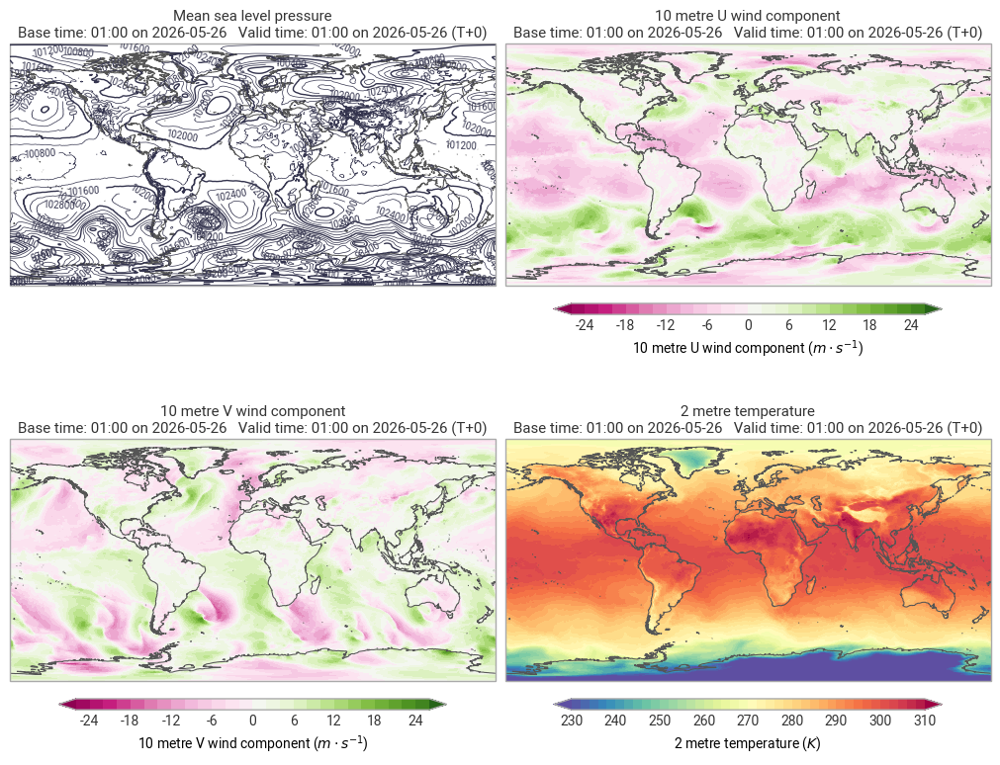
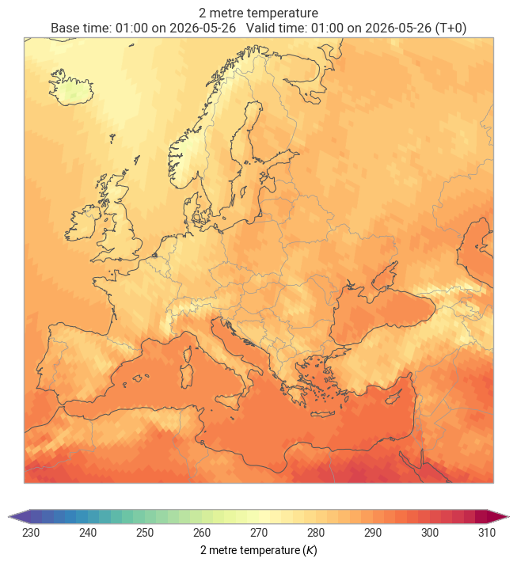
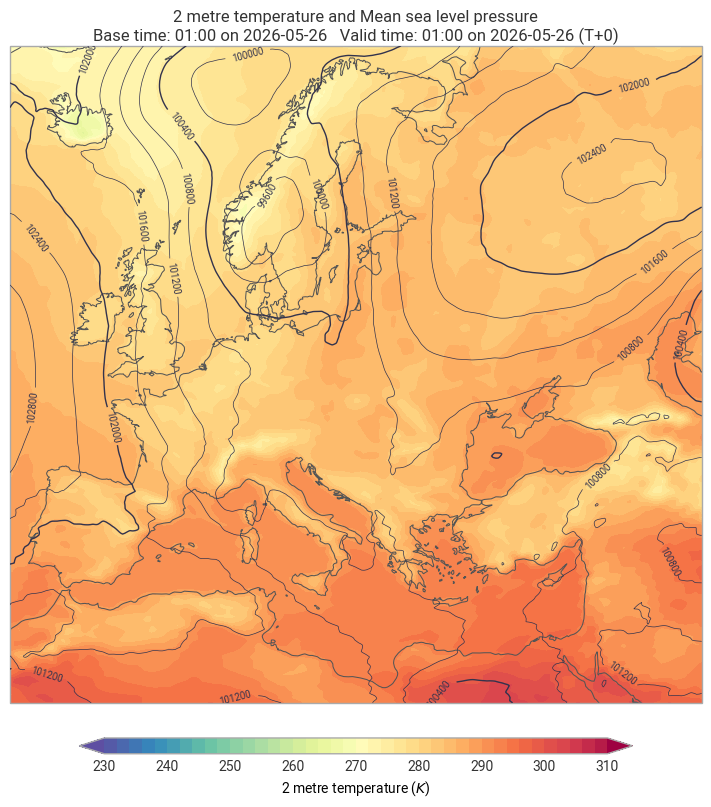
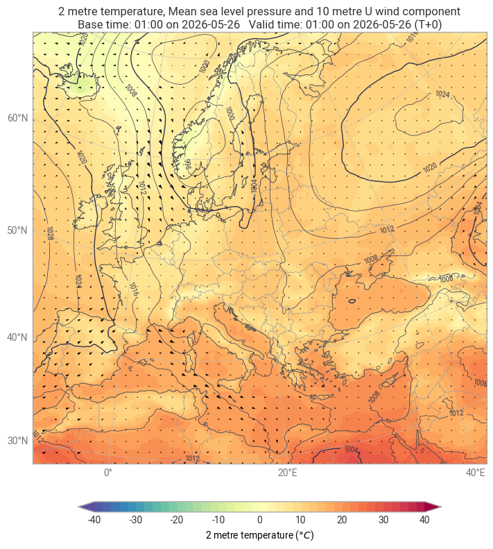
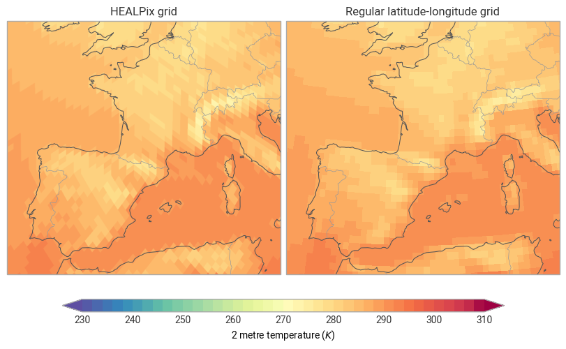
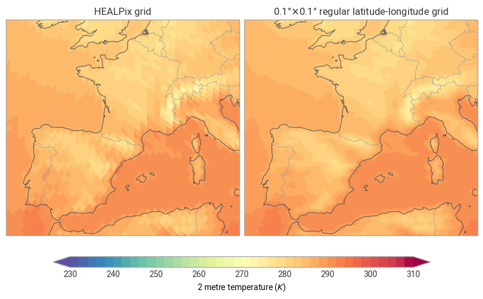

Using earthkit with the Destination Earth Climate Digital Twins#
This notebook introduces the core earthkit libraries and shows how to retrieve, inspect, and visualise a snapshot of Destination Earth Climate DT data using the Polytope API.
What you will learn
How to build a Polytope request and pull data from the Climate DT stream
How to explore data with
earthkit.dataHow to make quick global and regional maps with
earthkit.plotsHow to regrid from the native HEALPix grid to a regular latitude-longitude grid with
earthkit.geo
Setup#
The earthkit suite is a set of focused packages that work well together but can also be used independently. Here we import the four we need:
Package |
Alias |
Purpose |
|---|---|---|
|
|
Data access, I/O, fieldlist operations |
|
|
Cartographic and time-series visualisation |
|
|
Regridding, spatial utilities |
|
|
Temporal/spatial statistics and aggregations |
We also tell xarray to propagate metadata attributes through operations (keep_attrs=True), which
means units and long names stay attached to arrays after arithmetic.
Show code cell source
import earthkit.data as ekd
import earthkit.plots as ekp
import earthkit.geo as ekg
Retrieving data from the Climate DT#
Key request fields
Field |
Value |
Meaning |
|---|---|---|
|
|
SSP scenario projections (vs. |
|
|
Middle-of-the-road high-emissions scenario |
|
|
Coupled atmosphere–ocean model |
|
|
Climate hourly time-step stream |
|
|
MSL pressure, 10 m U-wind, 10 m V-wind, 2 m temperature |
|
|
Surface-level fields only |
|
|
Native model resolution (~9 km HEALPix nside=512) |
The data arrives as GRIB and is automatically parsed into a fieldlist — an ordered collection of individual GRIB fields that earthkit can index, filter, and convert.
Show code cell source
request = {
'activity': 'projections',
'class': 'd1',
'dataset': 'climate-dt',
'date': '20260526',
'experiment': 'SSP3-7.0',
'expver': '0001',
'generation': '2',
'levtype': 'sfc',
'model': 'IFS-NEMO',
'param': '151/165/166/167',
'realization': '1',
'resolution': 'standard',
'stream': 'clte',
'time': '0100',
'type': 'fc'
}
data = ekd.from_source(
"polytope",
"destination-earth",
request,
address="polytope.mn5.apps.dte.destination-earth.eu",
stream=False,
).to_fieldlist()
# ls() prints a compact summary table: one row per GRIB field
data.ls()
2026-06-05 11:56:57 - INFO - Key read from /Users/mavj/.polytopeapirc
2026-06-05 11:56:57 - INFO - Sending request...
{'request': 'activity: projections\n'
'class: d1\n'
'dataset: climate-dt\n'
"date: '20260526'\n"
'experiment: SSP3-7.0\n'
"expver: '0001'\n"
"generation: '2'\n"
'levtype: sfc\n'
'model: IFS-NEMO\n'
'param: 151/165/166/167\n'
"realization: '1'\n"
'resolution: standard\n'
'stream: clte\n'
"time: '0100'\n"
'type: fc\n',
'verb': 'retrieve'}
2026-06-05 11:56:57 - INFO - Polytope user key found in session cache for user mavj
2026-06-05 11:56:58 - INFO - Request accepted. Please poll ./4207a01c-33a6-4993-bc44-0154947607dc for status
2026-06-05 11:56:58 - INFO - Polytope user key found in session cache for user mavj
2026-06-05 11:56:58 - INFO - Checking request status (4207a01c-33a6-4993-bc44-0154947607dc)...
2026-06-05 11:56:58 - INFO - The current status of the request is 'queued'
2026-06-05 11:56:58 - INFO - The current status of the request is 'processing'
2026-06-05 11:57:00 - INFO - The current status of the request is 'processed'
| parameter.variable | time.valid_datetime | time.base_datetime | time.step | vertical.level | vertical.level_type | ensemble.member | geography.grid_type | |
|---|---|---|---|---|---|---|---|---|
| 0 | msl | 2026-05-26 01:00:00 | 2026-05-26 01:00:00 | 0 days | 0 | mean_sea | None | healpix |
| 1 | 10u | 2026-05-26 01:00:00 | 2026-05-26 01:00:00 | 0 days | 10 | height_above_ground_level | None | healpix |
| 2 | 10v | 2026-05-26 01:00:00 | 2026-05-26 01:00:00 | 0 days | 10 | height_above_ground_level | None | healpix |
| 3 | 2t | 2026-05-26 01:00:00 | 2026-05-26 01:00:00 | 0 days | 2 | height_above_ground_level | None | healpix |
ekp.geo.plot is the fastest way to see all fields at once. It creates one panel per field and
picks sensible defaults for colour scales and projections. Useful for a sanity check right after
retrieval.
Show code cell source
ekp.geo.plot(data)
<earthkit.plots.components.figures.Figure at 0x16d841190>

The fieldlist is ordered the same way as the param string in the request (151/165/166/167),
so we can unpack it directly into named variables.
Show code cell source
msl, wind_u, wind_v, t2m = data
Visualisation#
Climate DT data is stored on a HEALPix grid - an equal-area hierarchical tiling originally developed for CMB cosmology. Unlike regular lat-lon grids, each cell covers the same solid angle on the sphere, which avoids the polar over-sampling problem.
grid_cells renders the actual grid polygons rather than interpolating to pixels, so you can see
the cell shapes directly. style="auto" picks the colour scale automatically from the field
metadata. .borders() adds country borders as a layer on top.
Show code cell source
ekp.geo.grid_cells(t2m, domain="Europe", style="auto").borders()
<earthkit.plots.components.maps.Map at 0x3227ab0d0>

ekp.geo.plot also accepts multiple fields. Passing t2m and msl together renders temperature
as a filled background and mean-sea-level pressure as contours — earthkit infers the most useful
combination automatically.
Show code cell source
ekp.geo.plot(t2m, msl, domain="Europe")
<earthkit.plots.components.maps.Map at 0x32623db90>

The ekp.Map class gives you fine-grained control over every layer. The recipe below shows the
typical workflow:
Create a
Mapfor a named domainAdd filled colour (
chart.plot) for the primary variable, converting units on the flyAdd pressure contours on top
Add a wind barb / quiver layer
Decorate with coastlines, borders, gridlines, legend, and an auto-generated title
Unit conversion (K → °C, Pa → hPa) is handled by earthkit so you don’t need to transform the array yourself.
Show code cell source
chart = ekp.Map(domain="Europe")
chart.plot(t2m, units="celsius")
chart.plot(msl, units="hPa")
chart.legend()
chart.quiver(wind_u, wind_v)
chart.borders()
chart.coastlines()
chart.gridlines()
chart.title()
chart.show()

Regridding#
Many downstream tools (statistical packages, other models, simple array arithmetic) expect data on
a regular lat-lon grid. ekg.regrid re-interpolates a field to any target resolution.
The weight matrix for the interpolation is computed once and cached to disk, so subsequent calls with the same source/target combination are fast. Here we target 0.5 ° × 0.5 °.
Show code cell source
regular_ll = ekg.regrid(t2m, [0.5, 0.5])
regular_ll
| number_of_values | 259920 |
| array_type | ndarray |
| array_dtype | float64 |
| variable | 2t |
| standard_name | air_temperature |
| long_name | 2 metre temperature |
| units | kelvin |
| chem_variable | None |
| valid_datetime | 2026-05-26 01:00:00 |
| base_datetime | 2026-05-26 01:00:00 |
| step | 0:00:00 |
| level | 2 |
| layer | None |
| level_type | height_above_ground_level |
| member | None |
| grid_spec | {'grid': [0.5, 0.5]} |
| grid_type | regular_ll |
| shape | (361, 720) |
| area | (90.0, 0.0, -90.0, 359.5) |
ekp.Figure lets you arrange multiple map panels in a grid layout. This comparison panel shows
the same temperature field on both grids over France and Spain, making the hexagonal HEALPix cells
and the rectangular lat-lon cells visually obvious at this zoom level.
Show code cell source
fig = ekp.Figure(domain=["France", "Spain"], rows=1, columns=2)
healpix_plot = fig.add_map()
healpix_plot.grid_cells(t2m, style="auto")
healpix_plot.title("HEALPix grid")
regular_ll_plot = fig.add_map()
regular_ll_plot.grid_cells(regular_ll, style="auto")
regular_ll_plot.title("Regular latitude-longitude grid")
fig.coastlines()
fig.borders()
fig.legend()
fig.show()

Exercises#
Try regridding the same 2m temperature data to a higher (e.g. 0.1 degrees) or lower (e.g. 1 degrees) resolution, and plot it side-by-side with the original HEALPix grid.
Show code cell source
t2m_0p1 = ekg.regrid(t2m, [0.1, 0.1])
fig = ekp.Figure(domain=["France", "Spain"], rows=1, columns=2)
healpix_plot = fig.add_map()
healpix_plot.grid_cells(t2m, style="auto")
healpix_plot.title("HEALPix grid")
regular_ll_plot = fig.add_map()
regular_ll_plot.grid_cells(t2m_0p1, style="auto")
regular_ll_plot.title(r"0.1°$\times$0.1° regular latitude-longitude grid")
fig.coastlines()
fig.borders()
fig.legend()
fig.show()

Summary#
In this notebook you:
Retrieved a single time-step of four surface fields from the Climate DT projections stream
Inspected the fieldlist and visualised the data at global and regional scales
Built a fully annotated, multi-layer European chart with wind vectors
Regridded the native HEALPix data to a regular 0.5 ° grid and compared the two representations
Next: 02-earthkit-analysis.ipynb extends these ideas to a full multi-decadal dataset,
introduces temporal and spatial statistics, and shows how to compare Climate DT output against
ERA5 reanalysis.